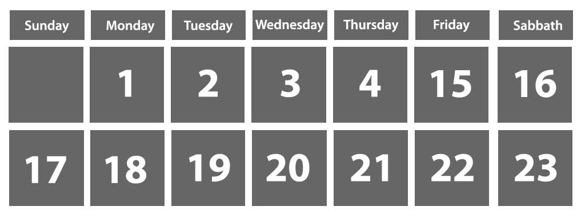

God’s Commandment Remains Unchanged
“Remember the sabbath day, to keep it holy. Six days shalt thou labour, and do all thy work: But the seventh day is the sabbath of the Lord thy God: in it thou shalt not do any work, thou, nor thy son, nor thy daughter, thy manservant, nor thy maidservant, nor thy cattle, nor thy stranger that is within thy gates: For in six days the Lord made heaven and earth, the sea, and all that in them is, and rested the seventh day: wherefore the Lord blessed the sabbath day, and hallowed it.” The Fourth Commandment, Exodus 20:8 - 11.
1. Can any alterations be made in what God does? Ecclesiastes 3:14
Answer
It shall be for ever: nothing can be put to it, nor anything taken from it
2. Are His past requirements still required now? Ecclesiastes 3:15
Answer
God requireth that which is past
3. When God blesses something, how long will it be blessed? 1 Chronicles 17:27
Answer
For ever
4. He hath blessed; and I cannot do what? Numbers 23:20
Answer
I cannot reverse it
5. Why did the Lord bless the seventh day? Exodus 20:11
Answer
For in six days the Lord made heaven and earth...and rested the seventh day
6. By whom did God make the worlds? Hebrews 1:2
Answer
By his Son
7. How involved was Jesus in the whole creation process?
Colossians 1:16
John 1:3
Answer
By him were all things created,...all things were created by him and for him; All things were made by him; and without him was not any thing made that was made
8. What then is Jesus’ relation to the Sabbath? Matthew 12:8
Answer
The Son of man is Lord even of the sabbath day
9. What do we know about our Lord? Hebrews 13:8
Answer
Jesus Christ the same yesterday, and to day, and for ever
10. Looking nearly forty years beyond the crucifixion, what day was Jesus concerned about? Matthew 24:20
Answer
The sabbath day
The seventh-day Sabbath is mentioned 59 times in the New Testament. And in no instance does the Bible say that God ever removed its sacredness. By contrast, the first day of the week is mentioned only 8 times in the New Testament. And in not a single case does the Bible attach sacredness to it.
The seventh-day Sabbath is mentioned 59 times in the New Testament. And in no instance does the Bible say that God ever removed its sacredness. By contrast, the first day of the week is mentioned only 8 times in the New Testament. And in not a single case does the Bible attach sacredness to it.
11. According to Paul, what is the basis of the Sabbath rest? Hebrews 4:4
Answer
God did rest the seventh day
12. Paul confessed that he believed all things written where? Acts 24:14
Answer
In the law and in the prophets
13. On what day did he go to the house of worship? Acts 13:14
Answer
On the sabbath day
14. Gentiles wanted him to preach to them when? Acts 13:42
Answer
The next sabbath
15. Who came the next Sabbath to hear God’s word? Acts 13:44
Answer
Almost the whole city
16. On what day was prayer wont to be made? Acts 16:13
Answer
On the sabbath
17. How does the Bible tell us that gathering for public worship on the Sabbath was Paul’s regular practice? Acts 17:2
Answer
As his manner was, went in unto them, and three sabbath days reasoned with them out of the scriptures
18. How often did Paul present the Scriptures to both Jews and Greeks? Acts 18:4
Answer
Every sabbath
19. How thoroughly did Paul instruct his converts? Acts 20:27
Answer
I have not shunned to declare unto you all the counsel of God
Paul declared all the counsel of God. And he never mentioned anything about Sunday sacredness.
20. Of whom would men arise, speaking perverse things? Acts 20:30
Answer
Of your own selves
21. To what class of people was he speaking? Acts 20:17
Answer
The elders of the church
22. When would this take place? Acts 20:29
Answer
After my departing
23. In vision, Daniel was shown a power that would arise which would think to change what? Daniel 7:25
Answer
Times and laws
24. Paul told the early believers not to expect the end of the world except there come what first? 2 Thessalonians 2:3
Answer
A falling away
25. What two names did he call the one who would lead out in this falling away? 2 Thessalonians 2:3
Answer
That man of sin...the son of perdition
Carefully study 2 Thessalonians 2:1 - 12. This man of sin who would cause the church to fall away would actually put himself in the place of God (verse 4). The mystery of iniquity was already at work in Paul’s day but was not allowed to fully develop as long as a certain other power was in existence (verse 7). Notice that this falling away would involve serious doctrinal deceptions (verses 9-12). The prophetic development of this apostasy is the subject of the next two lessons.
26. God wants all men to be saved and to come to the knowledge of what? 1 Timothy 2:4
Answer
The truth
27. For what weak reason do some reject God’s commandments? Mark 7:9
Answer
That ye may keep your own tradition
“Man shall not live by bread alone, but by every word that proceedeth out of the mouth of God.” Matthew 4:4.
28. The times of our ignorance God winked at; but now He commands men everywhere to do what? Acts 17:30
Answer
Repent
29. How should I respond when I learn the truth? Psalm 119:60
Answer
I made haste, and delayed not to keep thy commandments
(For further study on this subject see These Last Days Information Booklet “F” entitled, The Lord’s Holy Day.)
In the Light of God's Word...
Additional comments:
Next Lesson: Winds, Waves, and Beasts from the Sea
Answering Your Questions Regarding The Lord’s Holy Day
These Last Days Booklet "F"
Information Booklet F
Supplement to Lesson 20
There are those who believe that they can choose their own day during the week to worship God on. But this idea cannot be supported in Scripture. Nowhere in the Bible are God’s people given the option of deciding which day of the week to keep holy.
God blessed a particular day as a memorial of an event which occurred on that day in creation week. In following God, we cannot keep holy a day in which He has not made it holy. In like manner, we cannot receive a blessing from a day which God has not blessed.
The only place you will ever find any significance attached to Sunday is in the traditions of men. But is it safe to follow these traditions?
Jesus asked, “Why do ye also transgress the commandment of God by your tradition?...Thus have ye made the commandment of God of none effect by your tradition....In vain they do worship me, teaching for doctrines the commandments of men.” Matthew 15:3, 6, 9.
Exodus chapter 16 records an experience which God gave His people to determine “whether they will walk in my law, or no” (verse 4). For forty years the schedule of the fall of the manna distinguished the Sabbath from all other days of the week.
But some people tried to treat the Sabbath just like any other day. And some tried to treat other days like the Sabbath. Then the Lord said, “How long refuse ye to keep my commandments and my laws?” (verse 28).
Certainly the obligation of the fourth commandment cannot be fulfilled if we choose to worship on a day contrary to that which the commandment specifies.
Consider the following poem which shows from various Bible events that it does indeed matter to God if we choose to follow what He says or not.
IT MATTERS
Two trees in the midst of the garden Grew in the very same way. But it mattered which tree Eve partook of, And the difference is still felt today.
It mattered which type of an offering Was brought by Abel and Cain. The Lord had respect unto Abel’s, But Cain’s substitute wasn’t the same.
It mattered to Nadab and Abihu Which fire they offered with sin. “Isn’t one fire as good as another?” They tragically reasoned within.
David well knew God’s instructions How the sacred ark should be moved, But ignored the crucial specifics As the death of Uzzah proved.
“Why must I dip in the Jordan?” Naaman asked in a huff. “Aren’t the rivers of Damascus far better?” No, Naaman, they’re not good enough. “And why must I dip seven times? Won’t dip number one do the trick?” Had Naaman ignored the specifics, He’d have returned to his home still sick.
When God gives specific instructions For a task that we’re to do, He intends for us to perform it The way He has asked us to.
When He tells us we are to do it In a certain particular way, He doesn’t intend us to change it To suit what others might say.
He often specifies details Extremely important to Him, That people regard far too lightly And make alterations at whim.
There’s a purpose for each of God’s precepts, The “why” we may never have heard. And we, though we may not discern it, Are safe only in following each word.
No Scriptural Authority for Sunday Observance
Certainly if Jesus had instituted a new day of worship, the Bible would say something about it! If Sunday was to be given special recognition, we should be able to find some mention of it in Scripture.
The word “Sunday” is not in the Bible. There it is called, “the first day of the week.” So let’s examine all the New Testament references to “the first day of the week” and see what these tell us.
There are only eight such New Testament texts which mention the first day of the week, or Sunday. Lets examine each one.
- Matthew 28:1 - This text simply says that it was on the first day of the week that the two Marys went to the sepulchre. It says nothing about Sunday sacredness. But it does show that the Sabbath is the day that comes before Sunday.
- Mark 16:2 - This text is basically the same. No mention of Sunday sacredness.
- Mark 16:9 - Here we are told that Jesus arose on the first day of the week, but nothing is said about it becoming the special day of worship.
- Luke 24:1 - Same basic information.
- John 20:1 - Here we read of Mary Magdalene’s first visit to the tomb “when it was yet dark.” But nothing is said about a change in the fourth commandment.
- John 20:19 - Later that same day as Jesus appeared to the disciples. Why had they assembled together? The Bible says that it was “for fear of the Jews.” Nothing is said about any special sacredness attached to the day. So far we have seen that the Bible does not support Sunday-keeping in honor of Christ’s resurrection. In fact, the only Biblically recognized institution in honor of the resurrection is baptism (see Romans 6). No other memorial of that event is anywhere authorized in Scripture.
- Acts 20:7 - A group of believers had come together “to break bread,” which, according to Acts 2:46, early Christians did “daily”. While they were gathered, “Paul preached unto them, ready to depart on the morrow.” This is the only recorded instance of a formal religious service ever held on the first day of the week. Surely no one would suggest that the conducting of a single service on that day would constitute sufficient support for the keeping of every Sunday holy throughout the rest of earth’s history. Especially since in Corinth alone there is record of religious services being held, not on the first day of the week, but on “every Sabbath” for “a year and six months”! (Acts 18:4,11). A closer look at our passage in Acts 20:7 reveals that even here nothing is said about a Sunday morning meeting. It was on the first day of the week, but it was during the dark part of that day (read the whole context). The Bible reckons days from sunset to sunset, not from midnight to midnight, as is done today (see Genesis 1:5, 8, etc.). Thus this particular meeting was held on Saturday night! According to the Biblical account, the reason for the meeting was that Paul was “ready to depart” the next morning. He later told the Ephesians, “I know that ye all...shall see my face no more” (see verse 25). Considering the occasion, we realize the weakness of any attempt to use this passage as a case for the abolition of God’s express commandment, “The seventh day is the Sabbath of the Lord thy God.” Exodus 20:10. At dawn on Sunday morning Paul set out on an 18-mile journey on foot to Assos, obviously displaying no respect for the day since he was willing to travel so far.
- 1 Corinthians 16:2 - This text says nothing about a religious service or gathering of any kind. It certainly says nothing about the veneration of Sunday as a holy day. According to this text, the first day of the week is the day to take care of personal financial matters. At the beginning of each week the Christian is to “lay by him in store” his contribution, systematically planning his giving and setting it aside. Figuring out one’s offerings involves a calculation of earnings. If God had transferred the solemnity of the Sabbath to the first day of the week, Paul would not have recommended such activity to be done on that day. We have just examined every Biblical mention of the first day of the week! And, as you can plainly see, there is not even a hint of a change in worship from Sabbath to Sunday. And such a change cannot be found in the Scriptures. Why, because God clearly states: “I AM THE LORD, I CHANGE NOT.” Malachi 3:6.
Paul and the Sabbath
Some have asserted that the apostle Paul taught us to disregard God’s fourth commandment. They cite two passages, Romans 14:5-6, and Colossians 2:16-17, to support this assertion
Before we look at those texts, let’s just think a minute. If Paul had really advocated the abandonment of the seventh-day Sabbath, we could expect to find much intense discussion of it in the New Testament. “No small dissension and disputation” (Acts 15:2) was raised over the issue of circumcision. Then where is there any evidence of a controversy over the Sabbath? There is none.
When given an opportunity to press charges against Paul, the Jews could not even come up with anything that they could prove against him! (See Acts 21:33-34; 24:5-6, 12-13; 25:7, 18-19, 25, 27.) If Paul had broken the Sabbath, which was a crime worthy of death (see Exodus 31:14-15; 35:2; Numbers 15:32-36), then the Jews certainly would have capitalized on it.
Paul is the one, you remember, who said that the law is the standard by which we will be judged (see Romans 2:12), that it is the doers of the law who shall be justified (see Romans 2:13), that to break the law is to dishonor God (see Romans 2:23), and that the law is holy, just, and good (see Romans 7:12). “Do we then make void the law through faith?” he asks in Romans 3:31. “God forbid: yea, we establish the law.”
orderly, and keepest the law.” Paul’s own testimony supports this fact: “Neither against the law of the Jews, neither against the temple, nor yet against Caesar, have I offended any thing at all.” Acts 25:8 (see also Acts 25:10; 26:22; 28:17).
What then is the meaning of the two passages commonly cited?
Romans 14:5 - 6
This passage mentions nothing about the Sabbath. A careful reading of the context reveals that the discussion had to do with eating versus fasting. The fourth commandment says nothing about eating or fasting. So this is a totally different issue.
Fasting was a common practice in Bible times. Mark records that “The disciples of John and of the Pharisees fast” Mark 2:18. The Pharisee in Luke 18:12 fasted twice a week. An ancient Jewish treatise on fasting, Megillath Ta’anith, mentions Jews who at that time regularly fasted on the second and fifth days of the week, that is, Monday and Thursday. The Didache, written later, warns Christians not to fast with the hypocrites on the second and fifth days of the week, but rather on the fourth and sixth days (see Didache 8:1).
Paul says, “One man esteemeth one day above another: another esteemeth every day alike. Let every man be fully persuaded in his own mind.” Notice carefully verse 6. “He that regardeth the day” would be “he that eateth not.” And “he that regardeth not the day” would be “he that eateth.”
Thus it is clear from the context that Paul here was not addressing the issue of the Sabbath at all, but was commenting about other days that were not religious days, but were days that were still regarded as special by some.
Colossians 2:16-17
This passage is presented because of Paul’s statement regarding holy days and sabbath days. The assertion has been made that Paul was here saying that the fourth commandment is no longer binding for Christians. A closer look, however, reveals that in this text Paul makes no reference to the seventh-day Sabbath.
In verse 17 he tells us very plainly that he is talking about “sabbath days: which are a shadow of things to come; but the body is Christ.” In other words, days which typically illustrated and pointed forward to Christ’s work of saving man from sin.
Such “shadows” were instituted only because of the problem of sin. Therefore the seventhday weekly Sabbath does not fit that category. Having been instituted before man ever sinned (compare Genesis 2 with Genesis 3), it wasn’t given as a shadow of a coming Saviour; it was established as a memorial to the Creator whose work had already taken place. Found in God’s moral law, and being completely unrelated to ceremonial shadows, the seventh-day weekly Sabbath could not be what Paul was talking about.
What then did he have in mind? Were there other “sabbath days” besides the weekly Sabbath of the Lord? Yes, Leviticus chapter 23 mentions seven annual ceremonial sabbaths. Being tied to particular dates, these sabbaths could occur on different days of the week each year, and not just on the weekly seventh-day Sabbath.
“A meat offering” and “drink offerings” (see Leviticus 23:13, 18, 37) were to be presented in connection with these convocations, thus explaining Paul’s phrase “in meat, or in drink” in Colossians 3:16.
The word “sabbath” means “rest.” A sabbath is a day of rest from one’s work. Each of the annual sabbaths listed in Leviticus 23 are accompanied by the words, “Ye shall do no servile work therein” – except on the Day of Atonement. This was the most solemn and most significant of all the annual sabbaths. On it they were commanded, “Ye shall do no manner of work” Verse 31. “And whatsoever soul it be that doeth any work in that same day, that same soul will I destroy from among his people” Verse 30.
The first three ceremonial sabbaths were shadows of events connected with Christ’s ministry on earth. The last four pointed to events connected with Christ’s closing work in the sanctuary in heaven (see Lessons 14-16 for more information on Christ’s heavenly ministry).
feasts of the Lord, which ye shall proclaim...beside the sabbaths of the Lord” Leviticus 23:37- 38. That distinction was still clear in Paul’s day. When he specified “sabbath days: which are a shadow of things to come,” there was no misunderstanding which Sabbaths were being referred to.
Ancient Ceremonial Sabbath days
| Occassion | Date | Leviticus 23 |
|---|---|---|
| 1st day of Feast of Unleavened Bread | 15th day of the first month | verses 5, 6, 7, 11 |
| 7th day of Feast of Unleavened Bread | 21st day of the first month | verse 8 |
| Pentecost | 50th day from morrow after 15th of the first month | verses 15, 16, 21 |
| Blowing of Trumpets | 1st day of the seventh month | verses 24, 25 |
| Day of Atonement | 10th day of the seventh month | verses 27-32 |
| Feast of Tabernacles | 15th day of the seventh month | verses 34, 25, 39 |
| 8th day of Feast of Tabernacles | 22nd day of the seventh month | verses 36, 39 |
The Timing of Christ’s Sacrifice
| Jesus' Experience | Calendar Date | Ceremonial Day | Day of the Week | Related Texts |
|---|---|---|---|---|
| Crucified as Lamb of God | 14th Day of the First Month | Passover | The Preparation Day | Ex. 12:5, 6; Ex. 12:21-28; John 1:29; 1 Cor. 5:7 |
| Rested in the Grave | 15th Day of First Month | First Day of Feast of Unleavened Bread | Double Sabbath (High Day) | Num. 28:17,18; John 19:31 |
| Raised as the First Fruits | 16th Day of First Month | Wave Sheaf Offering of First Fruits of Harvest | First Day of the Week | Lev. 23:10, 11; 1 Cor. 15:22, 23; Luke 24:1-3 |
The Jews and the Sabbath
Often Jesus came into conflict with the Jewish authorities regarding the Sabbath. But the issue was never on whether the Sabbath should be kept. Jesus said, “I have kept my Father’s commandments” John 15:10. The question was over what was “lawful” (see Matthew 12:12) to be done on the Sabbath.
on the Sabbath. The Jewish rabbis had burdened down the Sabbath with hundreds of man-made regulations which God had never authorized. Thus the Sabbath, which had been made to be a blessing, had become a drudgery. If Jesus had conformed to those human traditions He would have been affirming that human authorities have the right to define how God’s commandments should be obeyed
Although Jesus’ example of proper Sabbath-keeping stirred up the wrath of the Pharisees, nowhere do we find Him breaking God’s law or instructing His followers to do so. When a person accepted Christ’s message, it could still be said of that person, as of Ananias, that he was “a devout man according to the law” Acts 22:12. The Christian leaders reported to Paul, “Thou seest...how many thousands of Jews there are which believe; and they are all zealous of the law” Acts 21:20.
Also, the designation “Jewish Sabbath” cannot be found anywhere in Scripture. Nowhere is it called the “Sabbath of the Jews.” The Bible calls it “the Sabbath of the Lord,” and God specifically calls it “my holy day” (see Isaiah 58:13).
Isaiah 58:13
Notice the following: 1) – The Sabbath was instituted at Creation, 2000 years before there ever was a Jew. 2) – The Sabbath was made for “man.” Mark 2:27. 3) – Notice carefully in Isaiah 56:6-7 which Gentiles would be accepted by God in their worship:
“Also the sons of the stranger, that join themselves to the Lord, to serve him, and to love the name of the Lord, to be his servants, every one that keepeth the Sabbath from polluting it, and taketh hold of my covenant; Even them will I bring to my holy mountain, and make them joyful in my house of prayer: their burnt offerings and their sacrifices shall be accepted upon mine altar.” According to this verse, only when Gentiles keep the Sabbath and take hold of God’s covenant are they able to enjoy the fullest experience of worship.
The Sabbath does not belong to any particular race, but rather to God Himself and all who connect themselves with Him.
The Special Blessing of the Sabbath
Not only did God bless the Sabbath itself (Exodus 20:11), but he has also promised a special blessing to all who honor the Sabbath.
“Blessed is the man that doeth this, and the son of man that layeth hold on it; that keepeth the sabbath from polluting it, and keepeth his hand from doing evil. Neither let the son of the stranger, that hath joined himself to the Lord, speak, saying, The Lord hath utterly separated me from his people: neither let the eunuch say, Behold, I am a dry tree. For thus saith the Lord unto the eunuchs that keep my sabbaths, and choose the things that please me, and take hold of my covenant; Even unto them will I give in mine house and within my walls a place and a name better than of sons and of daughters: I will give them an everlasting name, that shall not be cut off. Also the sons of the stranger, that join themselves to the Lord, to serve him, and to love the name of the Lord, to be his servants, every one that keepeth the sabbath from polluting it, and taketh hold of my covenant; Even them will I bring to my holy mountain, and make them joyful in my house of prayer.” Isaiah 56:2-7.
The Sabbath Survives Calendar Changes
Some people have wondered if the seventh day of the week is now the same day that it was when the Lord created the world. There is no question as to which day the Sabbath was observed in New Testament times, because the Creator Himself was on earth. His practice confirmed the Sabbath which the Jews had been observing all along was indeed the true Lord’s Day. The part people have wondered about is during the centuries that have followed Christ’s death. How can we be sure that time has not been lost since then? We will look at five lines of proof.
1 – The Calendar - The calendar which was in use when Jesus was on earth was the “Julian Calendar,” named after Julius Caesar, who died 44 years before Christ was born. Its primary drawback was that it considered a year to be exactly 365 ¼ days long. Time revealed, however, that an actual solar year is eleven minutes and fourteen seconds shorter than that. Thus after several centuries, the calendar would become out of step with the seasons.
It was discovered that it was necessary to add exceptions to the leap year plan which had been used in the Julian Calendar. Instead of having a leap year every fourth year, it was found necessary to omit the leap year whenever the fourth year landed on the beginning of a century, such as the year 1700, 1800, and 1900. The exception to that exception would occur whenever the century year was divisible by 400, such as the years 1600 and 2000.
Between 1582 and 1923 each of the various nations of the world gradually adjusted its calendar to bring it back into step. The Catholic nations were the first to make the change. Pope Gregory XIII authorized a change in October of 1582 which dropped ten days from the calendar. By deleting October 5-14 from that year’s calendar, the dates were caught up where they should have been.
This change dealt only with the dates of that month, and had absolutely no effect upon the weekly cycle. The fifth day of the week, Thursday, October 4, 1582 was followed by the sixth day of the week, Friday, October 15, 1582. Thus the weekly cycle was uninterrupted.
October 1582
In other nations, the changeover was made later: English-speaking countries in 1752, Japan in 1873, China in 1912, Turkey and Russia in 1917, Serbia in 1919, and Greece in 1923. In each case the number of the date of the month was adjusted, but the days of the week were left untouched. For example, in Britain and her colonies, the fourth day of the week, Wednesday, September 2, 1752, was followed by the fifth day of the week, Thursday, September 14, 1752.
Because not all countries adopted the change at the same time, the dates of the months varied from country to country for over 300 years. But one thing was the same through it all – the weekly cycle. They each had their own calendar; yet when it was Sabbath in Russia, it was Sabbath in Germany, England, Italy, and all over the world. The Encyclopedia Britannica calls it “the unalterable uniformity of the week.”
2 – The Jewish People - The Jews have been extremely careful to keep track of the true Sabbath. No change would slip past their notice.
3 – Catholic Tradition - The Catholic Church dates back to the early centuries of the Christian era, and a change in the days of the week could not have inadvertently taken place without Catholics having something to say about it. But as their records show, they have guarded the identity of the first day of the week as faithfully as the Jews have the seventh.
4 – The Languages of Man - Here is a most fascinating evidence of a long-held and deeply embeded recognition of the seventh day throughout the world. In more than 100 languages the actual common name for the day we call Saturday is “Sabbath.” Here are just a few of them:
Polish: “Sobota”
Greek: “Sabbaton”
Russian: “Subbata”
Portuguese: “Sabbado”
Spanish: “Sabbado”
Italian: “Sabbato”
5 – The Scientific Records of Astronomers - “We have had occasion to investigate the results of the works of specialists in chronology and we have never found one of them that has ever had the slightest doubt about the continuity of the weekly cycle....There has been no change in our calendar in past centuries that has affected in any way the cycle of the week.” Dr. A. James Robertson, Director, American Ephemeris, Navy Department, U.S. Naval Observatory, Washington, D.C.
“As far as I know, in the various changes of the Calendar there has been no change in the seven day rota of the week, which has come down from very early times.” Sir Frank W. Dyson, Astronomer Royal, Royal Observatory, Greenwich, London.
“It is a strange fact that even today there is a great deal of confusion concerning the question of so-called ‘lost time.’ Alterations that have been made to the calendar in the past have left the impression that time has actually been lost. In point of fact, of course, these adjustments were made to bring the calendar into closer agreement with the natural year. Now, unfortunately, this supposed ‘lost time’ is still being used to throw doubt upon the unbroken cycle of the Seventh-day Sabbath that God inaugurated at the Creation. I am glad that I can add the witness of my scientific training to the irrevocable nature of the weekly cycle.
“Having been time computer at Greenwich for many years, I can testify...that all our days are in God’s absolute control – relentlessly measured by the daily rotation of the earth on its axis. This daily period of rotation does not vary one-thousandth part of a second in thousands of years....Not a day has been lost since Creation, and all the calendar changes notwithstanding, there has been no break in the weekly cycle.” Dr. Frank Jeffries, Research Director of the Royal Observatory, Greenwich, England.
“The continuity of the week...is without a doubt the most ancient scientific institution bequeathed to us by antiquity.” Edouard Baillaud, Director of the Paris Observatory.
Even if all records of time should suddenly be lost, astronomers could rediscover the time simply by calculating the positions of the stars which God has set in place “for signs, and for seasons, and for days, and years.” Genesis 1:14.
Since God has asked us to keep the Sabbath day holy, He has also made sure there would be no confusion as to which day that is.